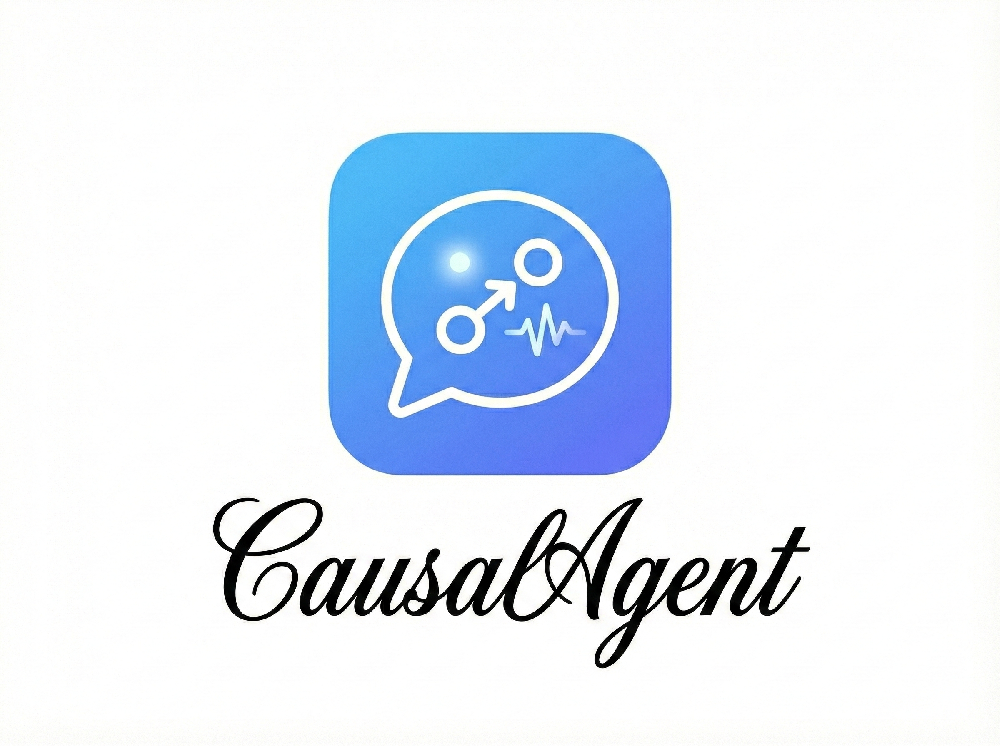

观测：采集与展示解耦
独立 monitor 按不同周期读取 MySQL，把标准化结果写进共享快照。 看板 GET 只读最近快照，手动刷新也只登记请求。

CausalChat · 阶段一数据库管理全景Phase 01 · Database Governance · 2026.07.28
阶段一的核心并不是“做了一个数据库后台”，而是把观测、业务读取和高风险写入分别设计， 再用一致性、权限、上限、快照、锁顺序与幂等约束把它们接成一个可解释的闭环。
不让 Web 请求承担重采集，不让前端承担授权，不让并发靠运气， 不让重试制造重复副作用。
01 · Executive summary
整个阶段一可以用三个动词概括：监控数据“采下来再共享”，业务数据“有界地现查”， 高风险动作“预览后原子写入”。这三条链路共用同一套后端授权和数据库访问分层。
独立 monitor 按不同周期读取 MySQL，把标准化结果写进共享快照。 看板 GET 只读最近快照，手动刷新也只登记请求。
用户、会话、任务、文件等明细通过明确 DTO、游标分页和正文分块从主库读取， 没有通用表浏览器，也没有任意 SQL。
CSRF、重新认证、影响预览、明确确认、幂等键、稳定锁顺序、业务变更与审计 在主库事务里形成完整闭环。
02 · System architecture
点击下方按钮可以突出某一条链路。最重要的区别是：监控看板读取共享快照， 业务明细读取真实表，高风险操作只走主库短事务。
03 · Data acquisition
看板不是从一个大 SQL 得到所有数据，而是针对不同事实使用不同查询入口。 每个结果都带来源、采集时间、状态和估算标识，前端不会把“估算”和“强一致事实”混在一起。
读取连接、版本、时间、慢查询累计值和复制线程状态。
SHOW GLOBAL STATUS：连接数、运行线程、慢查询累计值SHOW GLOBAL VARIABLES：连接上限、slow query 配置SHOW REPLICA STATUS：专用观测账号读取，2 秒缓存VERSION() / UTC_TIMESTAMP(6)：实例事实与统一时间核对仓库期望和实例事实，容量允许使用副本估算。
alembic_version 对比仓库 headinformation_schema 读取表、列、索引、外键is_estimate=true摘要含义是“高负载 SQL”，并非逐条慢查询日志。
performance_schema.events_statements_summary_by_digestSUM_TIMER_WAIT 降序，默认 20、硬上限 100用户、会话、任务、事件和文件不走快照，而是经有界 API 现查。
04 · Load control
不是简单地把所有 SELECT 扔给从库。真正的降压来自共享快照、分层周期、有界查询、 渐进读取、缓存和有限连接池；副本只承接明确允许短暂延迟的路径。
一次强一致查询读取最多 5 类共享快照，页面访问量不会线性放大 MySQL 诊断查询。
Web 只更新 refresh_requested_at；monitor 稍后取得采集权并执行。
快速 SELECT 使用 MAX_EXECUTION_TIME，容量、Digest、异常样本都有硬上限。
列表只返摘要；正文、附件、任务输入/结果在用户明确点击后再分块读取。
业务概览取 information_schema.TABLE_ROWS，并在 UI 标明估算语义。
在线配置最多缓存 5 秒，从库状态按 host 缓存 2 秒，失败结果也短时复用。
池耗尽最多等待 3 秒，每个 OS 进程按公式计算上限，避免无限阻塞堆积。
05 · Authorization
浏览器路由只改善体验，不构成授权依据。每个管理请求都会回到后端， 再从主库确认真实角色、启用状态和认证版本；高风险写入还要跨过额外安全门。
| 职责账号 | 允许做什么 | 明确不做什么 | 失效策略 |
|---|---|---|---|
MYSQL_WRITE_USER |
主库业务写、Alembic、readiness | 前端不直连；后台不暴露通用 SQL/DDL | 连接失败直接报错，不自动切主 |
MYSQL_READ_USER |
主/从业务 SELECT、单表 Digest SELECT | 不执行复制状态查询，不获得全局 SELECT | 副本异常时回退主库读池 |
MYSQL_REPLICA_STATUS_USER |
复制状态观测 | 不读业务表，不写业务数据 | 不可用即判定副本不适合读 |
MYSQL_REPLICATION_USER |
复制通道拉取 binlog | 不参与 Flask / worker / monitor 查询 | 复制异常只告警和回退，不自动故障切换 |
准确边界：当前写账号同时承担应用写入与迁移所需 DDL 权限，这是阶段一的真实配置， 还不是“运行账号与 migrator 完全拆分”。安全收口依赖后端没有任意 SQL/迁移入口，以及所有业务写都进入固定 service。
06 · Concurrency control
不同并发问题使用不同机制：监控采集用非阻塞命名锁，任务领取用
SKIP LOCKED，配置保存用乐观版本，高风险写入用稳定行锁顺序和幂等重试。
锁名包含快照类型，例如 causalchat:db-monitor:realtime。
因此不同类型可以并行，同一类型跨多个 monitor 实例只执行一次。
GET_LOCK(key, 0)超时为 0，竞争失败不等待、不堆积。
高风险管理员事务固定使用 READ COMMITTED，锁等待默认 5 秒；
目标用户按 ID 排序锁定，降低不同批次反向拿锁造成死锁的概率。
transaction_retryable，调用方必须复用原幂等键重试。FOR UPDATE SKIP LOCKED多个 slot 抢任务时，不等待已被其他 slot 锁定的行，而是跳过并寻找下一条可执行任务。 领取事务只包含“选中 + 状态推进”，随后立即提交。
active_session_key 唯一键兜底并发创建。仅靠应用判断无法覆盖并发竞态，所以关键路径都落到唯一约束； 相同请求重放原结果，同键异参明确冲突。
(actor_user_id, idempotency_key) 唯一；请求正文以服务端 HMAC 指纹区分。active_session_key 唯一，第二个并发创建回读已有 job。BINARY(32) 摘要后建唯一索引。07 · Consistency matrix
这张表是解释主从设计最关键的材料。原则是：安全决策和实时顺序固定强一致； 只有历史列表和容量估算这类允许短暂延迟的路径才尝试副本。
| 数据路径 | 一致性 | 为什么 | 失败时 |
|---|---|---|---|
| 登录、Session 恢复、管理员授权 | strong | 角色、启用状态、认证版本不能读旧值 | 主库不可用则拒绝，不从副本猜权限 |
| 管理列表、敏感详情、写前预览 | strong | 管理员必须看到刚提交的精确结果 | 返回稳定错误与 request ID |
| 普通历史列表、表容量估算 | eventual | 允许短暂延迟，并显式标记来源/估算 | 副本异常、延迟未知或超阈值即回退主库 |
| Job 创建/领取/心跳/终态、SSE 事件 | strong write | 不能因复制延迟重复领取或漏读实时事件 | 事务失败回滚，事件续传按主库 ID |
| 用户/文件写入、访问计数、checkpoint | primary write | 参与事务、幂等、生命周期或顺序语义 | 不自动切主，明确失败 |
| deep 审计 | manual strong | 范围广但低频，永不自动调度，不自动修复 | 单项超时/失败降级，不阻塞其他快照 |
每个 OS 进程的池上限是
write_pool + read_pool × (1 + replica_count)。
默认一主一从为 5 + 5 × 2 = 15。
一个 Web 进程、一个 worker 进程和一个 monitor 进程理论共 45 个池连接；
worker slot 共享所在进程的池，不按 slot 数再次相乘。
2026-07-27 的非生产只读快照记录：max_connections=151、
Max_used_connections=31、Threads_connected=31、
Threads_running=3。该数据会漂移，发布前必须重新测量。
08 · Git evolution
从 6bc5c52 到 d4a087d 共识别出 37 个阶段一相关提交：
14 feat、9 docs、7 test、5 fix、1 build、1 chore。以下按能力里程碑分组。
edd42ac
恢复了此前误删的普通用户前端脚本逻辑。它不属于数据库能力里程碑，
但证明实施过程中持续维护了“不因管理端改造破坏聊天端”的边界。
09 · Presenter route
建议按“问题 → 分流 → 关键机制 → 结果”讲，而不是逐文件介绍。 这样能让听众先理解为什么设计，再理解代码如何落实。
数据库后台最危险的三件事：页面刷新放大查询、权限判断读旧值、并发写入产生重复或相互等待。
监控用快照、业务明细有界现查、高风险动作短事务写入；三者不混用。
STATUS/VARIABLES、information_schema、performance_schema、业务表四类事实源，统一 DTO 带来源和时间。
Web 不采集、分层周期、查询上限、正文分块、估算、缓存、连接池与安全回退。
应用层实时主库授权 + CSRF/再认证；数据库层读写/状态/复制职责拆分。
监控命名锁零等待、任务 SKIP LOCKED、管理员稳定锁顺序、唯一键兜底重试。
先权限、再观测、再只读真实数据、最后受控写入；这是风险逐级开放，不是功能堆叠。
不提供任意 SQL、迁移、授权、复制控制或任务控制；自动故障切换和阶段三并发协议没有提前启用。
10 · Evidence map
以下是会议后被追问时最有用的证据索引。函数名比泛泛的目录介绍更容易快速定位。
strong/eventual 路由、2 秒复制状态缓存、池获取超时与 readiness。
app/db.py
get_dashboard_snapshots、request_snapshot_refresh、collect_snapshot。
Database/monitoring.py
run_forever 用有界线程池避免低频慢审计阻塞实时快照。
Database/monitor_worker.py
revision、主从、连接、容量、Digest、完整性约束与 MAX_EXECUTION_TIME。
Database/inspection.py
游标分页、正文分块、CSV 安全预览、文件访问计数与审计事务。
app/admin/business_service.py
实时主库角色校验、CSRF、auth_version 对旧 Cookie Session 的失效。
app/auth/authorization.py · csrf.py · session_guard.py
再认证、稳定行锁、最后管理员保护、删除生命周期和同事务审计。
app/admin/write_service.py
active_session_key 唯一键与 FOR UPDATE SKIP LOCKED。
app/agent/job_service.py
完整业务键 SHA-256、普通 insert-ignore、特殊 write upsert 和稳定次排序。
Database/mysql_checkpointer.py
auth_version、admin_operations、write_identity_hash 与关键唯一索引。
Database/migrations/versions/e4f5a6b7c8d9_*.py
用户提供的《CausalChat 阶段一（数据库管理）三个细分实施步骤（修订版）》最后修订于
2026-07-26，正文仍写“3.2 待实施”。仓库代码、README、开发日志和 2026-07-27 的
950b31d → 67e75d3 → a3b3ae5 → d4a087d 提交链表明：
3.2 已完成，阶段一已经收口。